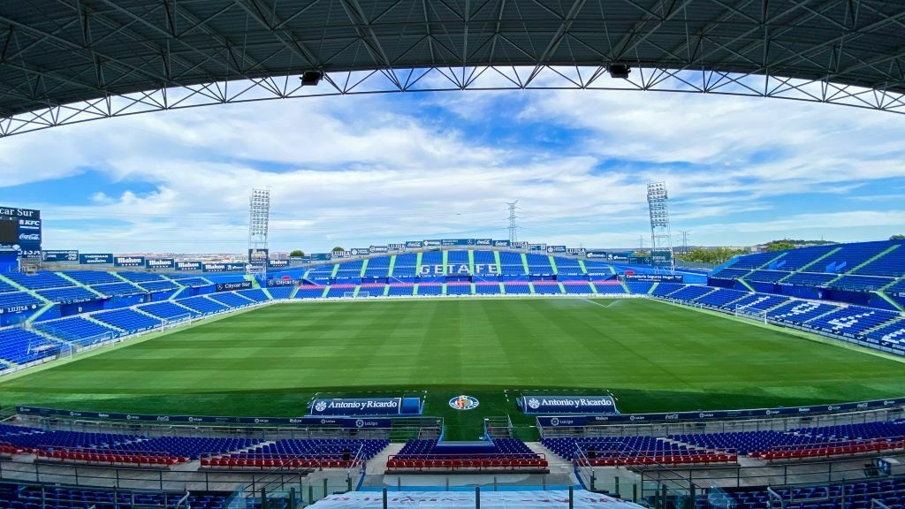
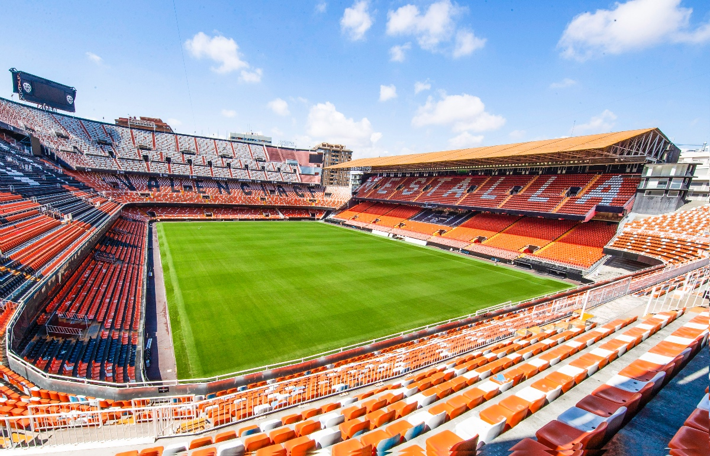
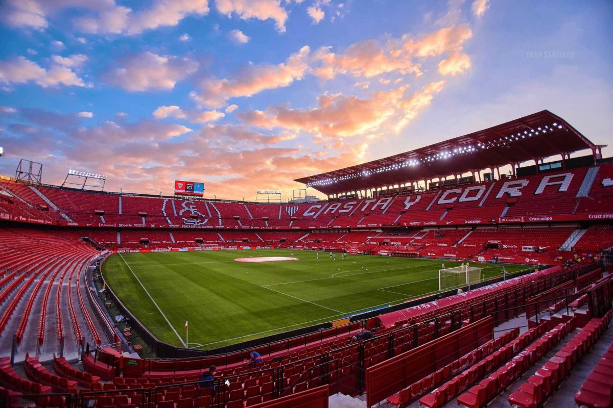
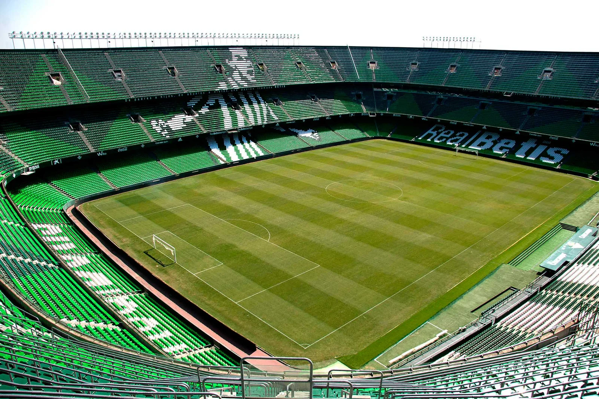
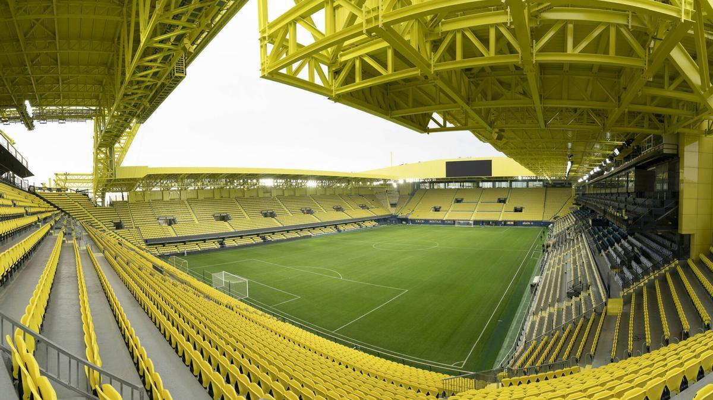
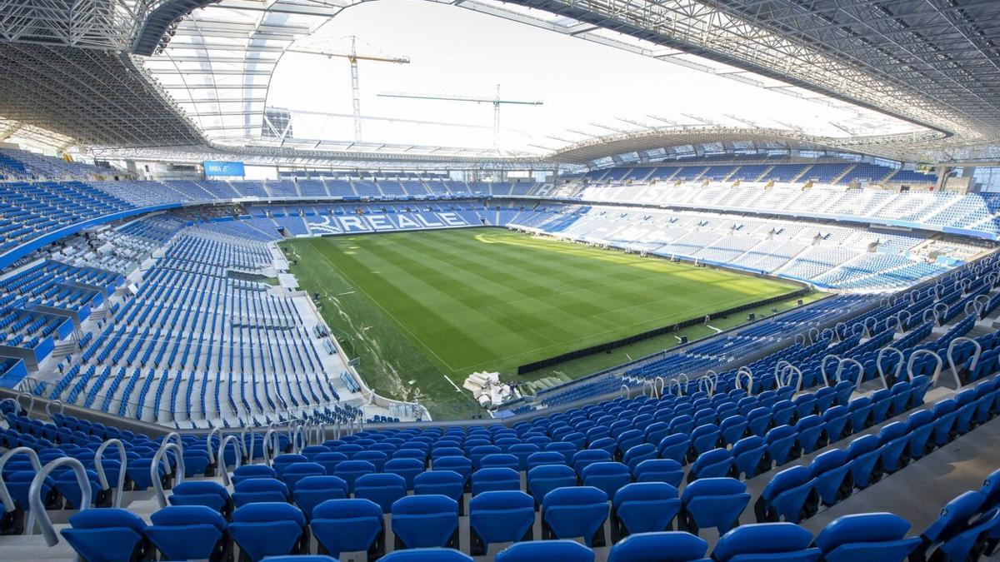

Calendario Getafe Club de Fútbol
- Partidos en Casa
-
Rival: Real Madrid
Estadio: Coliseum Alfonso Pérez
Fecha: 15/10/2023
Hora: 18:00
Ubicación: Getafe, Madrid

-
Rival: FC Barcelona
Estadio: Coliseum Alfonso Pérez
Fecha: 22/10/2023
Hora: 20:00
Ubicación: Getafe, Madrid
-
Rival: Celta de Vigo
Estadio: Coliseum Alfonso Pérez
Fecha: 03/12/2023
Hora: 18:00
Ubicación: Getafe, Madrid
-
Rival: RCD Espanyol
Estadio: Coliseum Alfonso Pérez
Fecha: 17/12/2023
Hora: 20:00
Ubicación: Getafe, Madrid
-
Rival: Real Valladolid
Estadio: Coliseum Alfonso Pérez
Fecha: 07/01/2024
Hora: 18:30
Ubicación: Getafe, Madrid
-
Rival: Osasuna
Estadio: Coliseum Alfonso Pérez
Fecha: 21/01/2024
Hora: 17:00
Ubicación: Getafe, Madrid
-
Rival: Rayo Vallecano
Estadio: Coliseum Alfonso Pérez
Fecha: 04/02/2024
Hora: 21:00
Ubicación: Getafe, Madrid
- Partidos Fuera de Casa
-
Rival: Atlético de Madrid
Estadio: Wanda Metropolitano
Fecha: 29/10/2023
Hora: 21:00
Ubicación: Madrid

-
Rival: Valencia CF
Estadio: Mestalla
Fecha: 05/11/2023
Hora: 18:30
Ubicación: Valencia

-
Rival: Sevilla FC
Estadio: Ramón Sánchez-Pizjuán
Fecha: 12/11/2023
Hora: 20:45
Ubicación: Sevilla

-
Rival: Real Betis
Estadio: Benito Villamarín
Fecha: 19/11/2023
Hora: 17:00
Ubicación: Sevilla

-
Rival: Villarreal CF
Estadio: Estadio de la Cerámica
Fecha: 26/11/2023
Hora: 19:30
Ubicación: Villarreal

-
Rival: Athletic Club
Estadio: San Mamés
Fecha: 03/12/2023
Hora: 21:00
Ubicación: Bilbao

-
Rival: Real Sociedad
Estadio: Anoeta
Fecha: 10/12/2023
Hora: 18:00
Ubicación: San Sebastián
